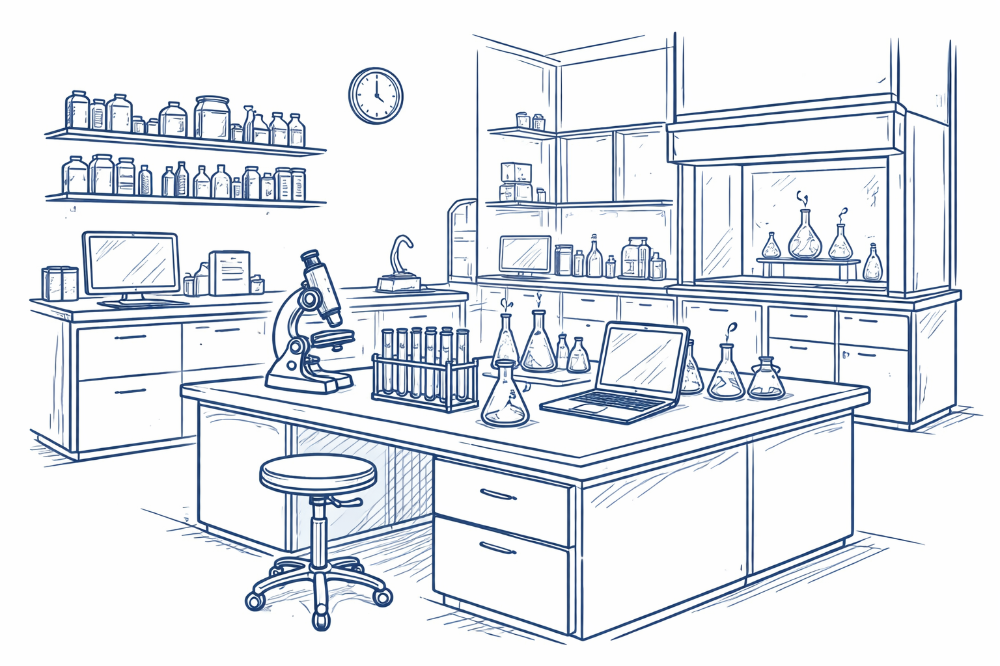

Aspirante a Consejera Propietaria
Nelly Ma. de la Paz González Rivas
Una representación cercana, responsable y comprometida con el personal académico de la Facultad de Química.
Aspirante a Consejera Propietaria
Nelly Ma. de la Paz González Rivas
Aspirante a Consejera Suplente
Miriam Verónica Flores Merino
100%
Asistencia comprometida
2 años
Periodo de gestión 2026–2028
3
Campus atendidos
5
Metas estratégicas
La vida universitaria se sustenta en la participación responsable de su comunidad académica en los espacios de deliberación institucional. El H. Consejo Universitario constituye el máximo órgano colegiado de la Universidad Autónoma del Estado de México.
La Facultad de Química ha sido históricamente un espacio de formación académica de gran relevancia, caracterizado por su contribución al desarrollo científico y la formación de profesionales altamente capacitados.
"Quienes aspiramos a desempeñar esta responsabilidad asumimos el compromiso de ejercer una representación cercana, responsable y respetuosa de la legislación universitaria."
Periodo
2026 – 2028
Consejo Universitario
Propietaria
Personal académico de la Facultad de Química, UAEMéx. Comprometida con la representación informada y el bienestar del profesorado.
Suplente
Personal académico de la Facultad de Química, UAEMéx. Comprometida con la participación activa y la equidad en los procesos institucionales.
Participar de manera responsable e informada en las sesiones y trabajos del H. Consejo Universitario, contribuyendo al análisis y deliberación de los asuntos institucionales conforme a la legislación universitaria vigente, fortaleciendo la comunicación y el vínculo entre la representación académica y el personal académico de la Facultad de Química.
Participación Colegiada
Asistencia puntual y activa en todas las sesiones
Comunicación Abierta
Sesiones quincenales de "Puertas Abiertas"
Equidad y Mérito
Seguimiento a evaluación y promoción académica
Infraestructura
Laboratorios equipados y reactivos oportunos
Bienestar Docente
Espacios de diálogo y formación continua

Infraestructura
Laboratorios seguros
El desarrollo de actividades académicas seguras y de calidad requiere laboratorios bien equipados y abastecimiento oportuno de reactivos. Respaldamos y damos seguimiento institucional a estas prioridades.
Asistencia a sesiones del H. Consejo Universitario
Según convocatoriaParticipación en comisiones asignadas
Según designaciónRevisión de convocatorias y orden del día
En cada sesiónPublicación de acuerdos por medios oficiales
Después de cada sesiónComunicación vía correo institucional
PermanenteCoordinación con Administración de la Facultad
PermanenteSesiones de "Puertas Abiertas"
Cada quince díasSesión "Preguntas y Respuestas"
Al cierre del semestreCalendario anual de sesiones del Consejo
Una vez al inicioDiseño de mecanismos de difusión
2 veces año 1, 1 año 2Ajustes a estrategias (retroalimentación)
Cada semestreAsistencia garantizada
Participación puntual y permanente en todas las sesiones ordinarias y extraordinarias del H. Consejo Universitario.
Deliberación con fundamentos
Participar activamente con respeto y responsabilidad, privilegiando el análisis informado en los trabajos colegiados.
Transparencia informativa
Comunicar con antelación los enlaces de transmisión, información relevante y acuerdos emitidos en cada sesión.
Puertas Abiertas
Sesiones quincenales en los tres campus con accesibilidad, claridad y registro de inquietudes para su seguimiento.